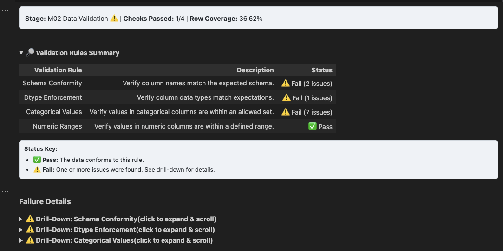

Analyst Toolkit
A modular package that streamlines ETL, validation, and diagnostics for fast, consistent analytics — run as a Jupyter notebook pipeline, CLI, or MCP server.
v0.5.0
MCP Platform Upgrade — The toolkit is now a full MCP server: ingest inputs, manage durable sessions, serve artifact dashboards, and plug into Claude Desktop or any JSON-RPC 2.0 client. Docker + GCS + SQLite backend included.
System Summary
Centralizes reusable ETL, schema checks, duplicate/outlier detection, and clean exports into a configurable toolkit. Run interactively in notebooks, as automated CLI pipelines, or as an MCP server — giving AI agents direct tool access to every module. Produces a 0–100 Data Health Score, Executive Cockpit, and ten standalone HTML dashboards per run.
Tech Stack
Python
Pandas
YAML
Jupyter
CLI
MCP Server
Docker
SQLite
GCS
ChatGPT‑4o
Gemini CLI
Gemini Code Assist
Artifacts
- Config‑driven ETL modules and pipelines
- Validation/profiling configs and reports
- Duplicate/outlier detection utilities
- Clean CSV exports and HTML notebooks
- Executive Cockpit + Data Health Score dashboard
- Diagnostics, final audit, and data dictionary dashboards
- MCP server exposing all modules as agent-callable tools
Dashboard Previews

Notebook output — HTML dashboard, screen 1
Problems & Solutions
- Teams re‑build cleaning steps → config‑driven ETL and reusable modules.
- Ad hoc diagnostics → standardized validation and profiling.
- Fragile hand‑offs → clean exports with logs for repeatability.
- No agent interface → MCP server exposes every module as a callable tool.
- Ephemeral sessions → SQLite backend for durable, restart‑safe session state.
Task and Purpose
Grew from scattered snippets into a full-stack data quality platform — notebook pipelines, CLI automation, and now an MCP server that lets AI agents run the entire toolkit without human hand-holding. A living foundation for my analytics workflow.
Future State
- Cloud DB integrations (BigQuery, Snowflake).
- Expanded profiling (bias checks, drift detection).
- Stakeholder‑ready report builders.
- CLI wizard for new project scaffolds.
Deployment Utility
A lightweight companion that packages Toolkit pipelines for quick deployment, moving workflows from dev to production.
- Core Tools: Python, YAML
- Functions: Packaging, deployment, config management
- Artifacts: Ready‑to‑run builds
Links: Repository
Starter Kit
A pre‑packaged, deployable bundle of the Analyst Toolkit with configs and sample data for instant setup.
- Core Tools: Python, YAML, CLI
- Functions: Pre‑bundled Toolkit modules + configs
- Artifacts: Deployable .zip package
Links: Repository
Links